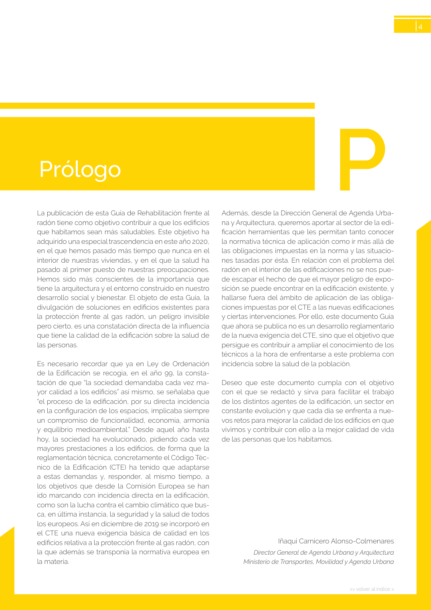

Guia de rehabilitacion frente al radon · edición sin-fecha · capa guia
Documento GUIA-PDF-23d2f2198c3b · SHA-256 del PDF 6765d0c34c51fbe193c3ed0c1378b710f98f086d16e2b68fc28ed36e143fdaea
Página física 4 de 24.
Copia fiel del PDF fuente · Fuente oficial
Ficha de la disposición en la fuente oficial
Créditos y autoría en el PDF fuente. Reproducción con cita de fuente y autores.
Permiso literal: Se permite la reproducción total o parcial del contenido de este do Edición actual: septiembre 2020 cumento siempre y cuando se cite la fuente original y a sus autores.
2
Este documento ha sido elaborado por el Instituto de ciencias
de la construcción Eduardo Torroja (IETcc) bajo la supervisión
de la Dirección General de Agenda Urbana y Arquitectura del
Ministerio de Transportes, Movilidad y Agenda Urbana (MITMA).
SECRETARÍA GENERAL DE
AGENDA URBANA Y VIVIENDA MINISTERIO GOBIERNO El IETcc, perteneciente al Consejo Superior de Investigaciones DE TRANSPORTES, MOVILIDAD
DE ESPAÑA Y AGENDA URBANA DIRECCIÓN GENERAL DE
AGENDA URBANA Y ARQUITECTURA Científicas (CSIC), es el centro de investigación en edificación
de referencia en España. La Unidad de Calidad en la Construc
ción del IETcc asesora al MITMA en la elaboración del Código
MINISTERIO GOBIERNO DE CIENCIA Técnico de la Edificación que, desde el año 2019, cuenta con la DE ESPAÑA E INNOVACIÓN
sección HS6 Protección frente a la exposición al radón.
Dirección y Coordinación:
Ministerio de Transportes, Movilidad y Agenda Urbana
Isabel Marcos Anasagasti
Esta publicación está formada por una serie de documentos cuyo Raquel Lara Campos
objetivo es constituir una herramienta de ayuda para el diseño de Eduardo González de Prado
soluciones de protección frente al radón: Instituto de ciencias de la construcción Eduardo Torroja CSIC
Pilar Linares Alemparte
■ Guía de rehabilitación frente al radón
Fichas de soluciones: Autoras:
Pilar Linares Alemparte
A: De aislamiento del edificio Sonia García Ortega
■ Solución A1. Barrera frente al radón
■ Solución A1-1. Barrera frente al radón. Encuentros Colaboradoras:
■ Solución A2. Sellado de fisuras, grietas, encuentros y juntas Virginia Sánchez Ramos
■ Solución A3. Puertas estancas Karina Angélica García Pardo
■ Solución A4. Creación de sobrepresión
Edita:
B: De reducción del radón antes de que penetre en los locales Centro de Publicaciones Secretaría General Técnica
a proteger Ministerio de Transportes, Movilidad y Agenda Urbana©
■ Solución B1. Ventilación del espacio de contención: cá Entidad colaboradora:
mara de aire Consejo Superior de Investigaciones Científicas · CSIC
■ Solución B2. Ventilación del espacio de contención: loca Ministerio de Ciencia e Innovación
les no habitables
■ Solución B3. Despresurización del terreno Catálogo de publicaciones de la Administración General
del Estado: publicacionesoficiales.boe.es
C: De reducción del radón tras penetrar en los locales a proteger
■ Solución C1. Ventilación de los locales habitables Centro virtual de publicaciones del Ministerio de Transpor
tes, Movilidad y Agenda Urbana: www.mitma.gob.es
Fichas de ejemplos:
Página web del Código Técnico de la Edificación:
■ Ejemplo A1+B3. Barrera frente al radón + despresurización www.codigotecnico.org
con red de tubos
■ Ejemplo A2+B1. Sellado + ventilación de la cámara sanitaria Maquetación y diseño gráfico:
■ Ejemplo A2+B3. Sellado + despresurización con red de tubos Lapizmente. Estrategia • Diseño Gráfico
■ Ejemplo A2+C1. Sellado + ventilación mecánica de los loca- Los contenidos o ideas recogidas en este documento pertenecen a
les habitables sus autores. Este documento está basado en el conocimiento dispo
nible en el momento de su publicación. No se aceptará por las institu
Publicación completa: ciones ni los autores implicados responsabilidad de ningún tipo por el
ISBN: 978-84-498-1045-9 uso de estas recomendaciones. Las figuras tienen carácter ilustrativo
NIPO: 796-20-136-5 y no deben interpretarse como detalles constructivos.
1ª edición: septiembre 2020 Se permite la reproducción total o parcial del contenido de este do
Edición actual: septiembre 2020 cumento siempre y cuando se cite la fuente original y a sus autores.
>> volver al índice >Formato: Texto de la página (Markdown)
Prólogo P >> volver al índice > 4 Además, desde la Dirección General de Agenda Urba na y Arquitectura, queremos aportar al sector de la edi ficación herramientas que les permitan tanto conocer la normativa técnica de aplicación como ir más allá de las obligaciones impuestas en la norma y las situacio nes tasadas por ésta. En relación con el problema del radón en el interior de las edificaciones no se nos pue de escapar el hecho de que el mayor peligro de expo sición se puede encontrar en la edificación existente, y hallarse fuera del ámbito de aplicación de las obliga ciones impuestas por el CTE a las nuevas edificaciones y ciertas intervenciones. Por ello, este documento Guía que ahora se publica no es un desarrollo reglamentario de la nueva exigencia del CTE, sino que el objetivo que persigue es contribuir a ampliar el conocimiento de los técnicos a la hora de enfrentarse a este problema con incidencia sobre la salud de la población. Deseo que este documento cumpla con el objetivo con el que se redactó y sirva para facilitar el trabajo de los distintos agentes de la edificación, un sector en constante evolución y que cada día se enfrenta a nue vos retos para mejorar la calidad de los edificios en que vivimos y contribuir con ello a la mejor calidad de vida de las personas que los habitamos. Iñaqui Carnicero Alonso-Colmenares Director General de Agenda Urbana y Arquitectura Ministerio de Transportes, Movilidad y Agenda Urbana La publicación de esta Guía de Rehabilitación frente al radón tiene como objetivo contribuir a que los edificios que habitamos sean más saludables. Este objetivo ha adquirido una especial trascendencia en este año 2020, en el que hemos pasado más tiempo que nunca en el interior de nuestras viviendas, y en el que la salud ha pasado al primer puesto de nuestras preocupaciones. Hemos sido más conscientes de la importancia que tiene la arquitectura y el entorno construido en nuestro desarrollo social y bienestar. El objeto de esta Guía, la divulgación de soluciones en edificios existentes para la protección frente al gas radón, un peligro invisible pero cierto, es una constatación directa de la influencia que tiene la calidad de la edificación sobre la salud de las personas. Es necesario recordar que ya en Ley de Ordenación de la Edificación se recogía, en el año 99, la consta tación de que “la sociedad demandaba cada vez ma yor calidad a los edificios” así mismo, se señalaba que “el proceso de la edificación, por su directa incidencia en la configuración de los espacios, implicaba siempre un compromiso de funcionalidad, economía, armonía y equilibrio medioambiental.” Desde aquel año hasta hoy, la sociedad ha evolucionado, pidiendo cada vez mayores prestaciones a los edificios, de forma que la reglamentación técnica, concretamente el Código Téc nico de la Edificación (CTE) ha tenido que adaptarse a estas demandas y, responder, al mismo tiempo, a los objetivos que desde la Comisión Europea se han ido marcando con incidencia directa en la edificación, como son la lucha contra el cambio climático que bus ca, en última instancia, la seguridad y la salud de todos los europeos. Así en diciembre de 2019 se incorporó en el CTE una nueva exigencia básica de calidad en los edificios relativa a la protección frente al gas radón, con la que además se transponía la normativa europea en la materia.

Datos candidatos: compruebe celdas y notas en el PDF.